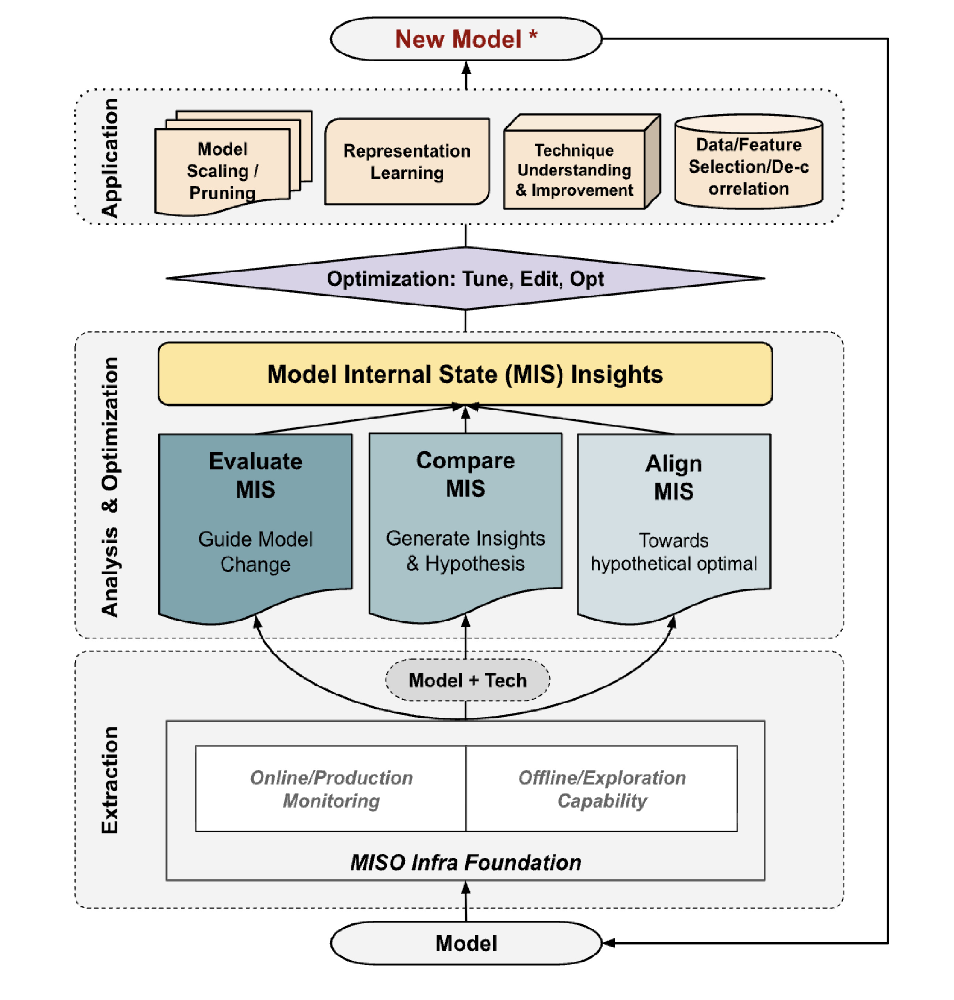
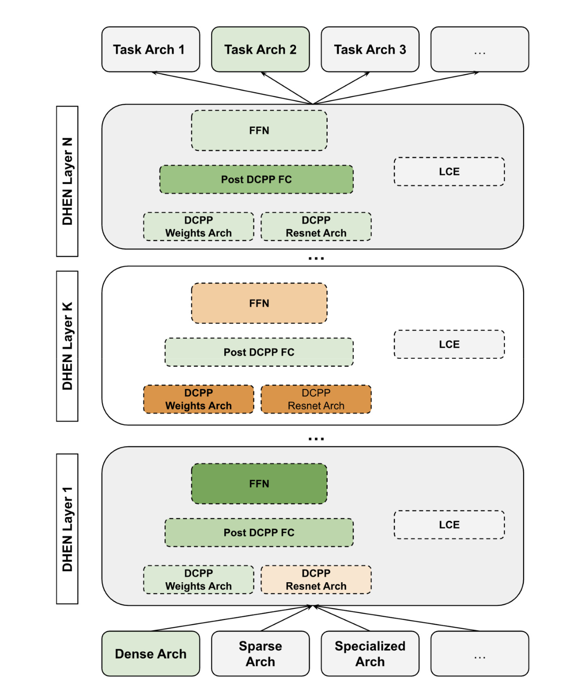
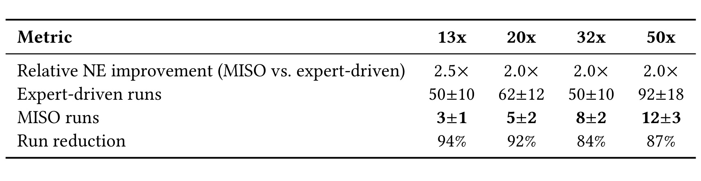
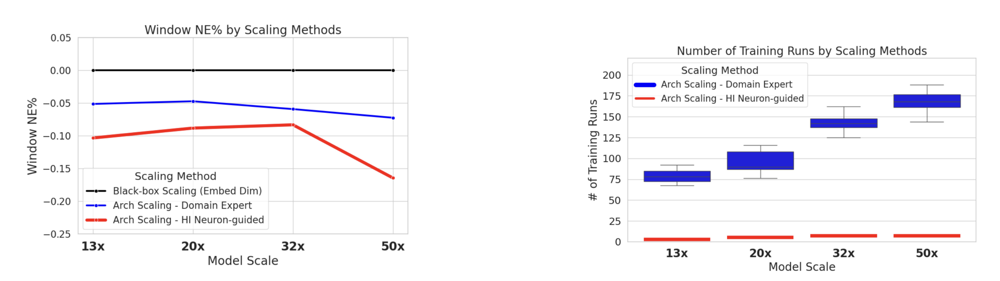
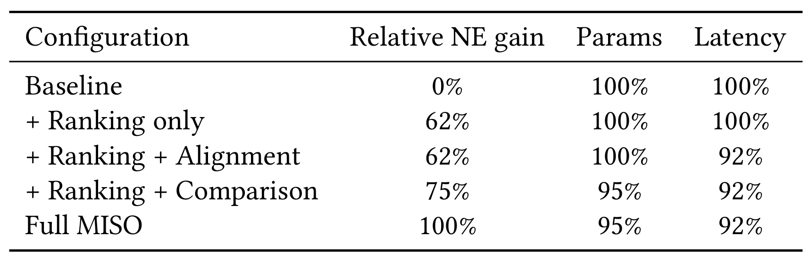

MISO：由模型内部状态引导的排序模型优化
《MISO: Model-Internal-State-Guided Optimization for Ranking Models》由 Yongzhe Zhang、Xiaoyu Deng、Yifan He、Mengying Sun 等 Meta 研究者完成，一作主机构为 Meta Inc.。论文于 2026 年 8 月 7 日提交，后于 8 月 10 日进入 arXiv 当日公开列表，并被 ACM RecSys 2026 的 OARS Workshop 接收。它关注的不是再发明一种全新的排序塔，而是成熟广告排序模型在长期演化中如何更少依赖昂贵试错。论文入口见 arXiv:2608.07035。作者因底层模型与数据的部署约束未公开完整代码库，因此本文应被视为系统与应用案例，而不是可直接复现的公开基准。
广告排序模型通常在既有模型族内反复做局部修改，但扩容哪个组件、替换哪个模块、退役哪条特征路径，仍依赖昂贵试错；端到端指标只告诉工程师结果是否变好，却不说明内部容量浪费、表示不稳定或近邻版本分歧发生在哪里。
1. 背景和问题
1.1 成熟排序系统的真实优化单位不是“整座网络”
大规模推荐与广告排序模型很少每个迭代周期都从零设计。生产模型已经有稳定的数据入口、特征处理、交互模块、共享底座和多任务头，线上延迟、训练资源、回滚策略也形成了硬约束。工程师更常面对的是一连串局部问题：某一层是否应该加宽，某个模块是否需要替换，某条特征路径是否失去价值，两个近邻架构中哪一个值得再付出一次完整训练和验证成本。这些修改幅度看似有限，却会在数十亿训练样本、数千万到数亿参数以及严格服务预算下变得昂贵。
传统工作流通常从端到端指标出发。一个候选模型训练完，工程师看到 Normalized Entropy（NE）改善或退化，再结合经验提出下一项修改。问题在于，最终指标是结果信号，不是定位信号：它能回答“这个版本好不好”，却很难回答“哪一部分容量没有被利用”“哪一层的表示偏离了预期”“两个只差一个局部模块的版本为何出现不同结果”。当每个答案都要靠一次完整重训来换取时，局部优化就退化成高成本的串行试错。
论文把这一处境放在专家调优与黑盒 AutoML 之间。专家调优能利用业务知识，也能考虑延迟与部署约束，但决策过程很依赖个人经验，难以复制，而且搜索覆盖有限。黑盒架构搜索可以自动探索，却往往只把模型当作输入配置与最终分数之间的函数，需要大量训练试验，给出的候选也未必容易解释。MISO 的核心判断是：训练好的模型已经产生大量关于自身行为的证据，只是这些证据长期没有被组织成工程决策接口。
1.2 为什么内部状态不能直接等同于优化建议
参数、激活、梯度、归一化统计、中间表示和模块响应都可以被观测，但“可观测”并不意味着“可行动”。第一，内部状态维度极高，一次训练可能产生亿级参数与海量样本级激活，工程师无法逐项查看。第二，不同信号的量纲、粒度和稳定性不同，梯度敏感不一定等于真实业务重要，归一化偏离也不一定意味着结构必须替换。第三，工程动作是粗粒度的：最终仍要决定扩容一个模块、剪掉一组参数、替换一条路径，而不是修改某个孤立统计量。
因此，MISO 要解决的是一个跨尺度映射问题：把细粒度、异构的内部证据压缩成少量可以审阅、拒绝和验证的局部编辑。论文没有把内部状态包装成一个万能分数，而是设计 ranking、alignment、comparison 三类原语，分别回答“哪里最值得投入容量”“哪里与参考行为不一致”“近邻版本究竟在哪里分叉”。这三个问题对应不同工程动作，避免把所有诊断都压成单一的重要性排名。
论文据此提出五项设计目标。统一 MIS 抽象要求不同架构、不同训练阶段的状态都能以一致方式抽取和存储；可行动聚合要求输出直接面向架构决策，而不是把海量原始统计交给工程师；闭环优化要求分析、修改与效果反馈彼此连接；低探索成本要求高质量配置只消耗少量训练或评估 runs；通用性与可解释性则要求同一套原语可以迁移到不同模型族，同时保留“为什么建议这次修改”的证据。五项要求之间存在张力：聚合越激进，越可能丢失模块细节；状态越丰富，抽取和存储越贵；自动化越强，越要防止代理分数绕过部署约束。MISO 的结构选择本质上是在这些矛盾之间求一个工程可用的中间点，而非追求单个离线分数最大化。
还要区分 MIS 与常见的样本级可解释方法。LIME、SHAP 或 Integrated Gradients 通常解释一次预测受哪些输入影响，主要服务于人的理解；MISO 则把粒度提升到神经元、层和模块，目标是决定下一次模型编辑。剪枝研究也会用内部信号识别冗余容量，但常围绕单一压缩任务。MISO 试图把同类证据扩展成同时支持扩容、剪枝、模块替换和特征重配置的工作流，因此评价它时既要看最终模型质量，也要看候选是否可审计、试验序列是否真正缩短。
1.3 论文问题的边界：预算受限的局部改进
给定一个已经训练好的排序模型，目标不是在无限搜索后找到理论最优架构，而是在有限 validation runs、训练成本和线上延迟约束下，选出一条短而有效的修改序列。每个候选仍需经过完整重训和验证，MISO 只负责缩小决策空间。换言之，它优化的是“下一次昂贵试验应该押在哪里”，不是声称用一次内部状态分析就替代训练。
这个边界十分重要。论文后文明确指出：当模型还没有达到可用基线、内部状态噪声太大，或工程问题是全新架构发现而非局部细化时，MISO 帮助会减弱。它最适合模型族已经稳定、版本持续演进、局部动作可以被清楚枚举的场景。对推荐系统而言，这恰好覆盖许多日常任务：embedding 与交互层扩容、多任务头调整、归一化模块替换、特征通路退役以及近邻结构的定向比较。
2. 方法
2.1 MIS Extraction Layer：把训练后内部状态变成统一接口
MISO 首先把“模型内部状态”（Model Internal States，MIS）抽象为模型 (M) 在一次训练或评估快照上产生的可查询集合。原文列举的对象包括参数张量、激活、梯度、归一化统计，以及神经元或模块级指标。为了说明这个接口，可以把原文的文字定义紧凑写成：
符号解释：(M) 是已训练的排序模型，(\theta) 表示参数，(a) 表示中间激活，(\nabla_a\mathcal{L}) 是损失对激活的梯度，(\mu) 与 (\sigma) 代表归一化或其他中间统计；省略号表示模块响应、扰动敏感度等可扩展信号。这个集合表达式是对论文文字定义的整理，不是作者另行编号的方程。
Extraction Layer 的关键不是“多抓一些日志”，而是把模型与训练框架的具体实现隔离在统一接口之后。抽取可以按神经元、层或模块设置粒度，也可以选择训练中、训练后或评估快照。这样，下游聚合逻辑不必为每一种 ranking architecture 重写一套数据管道。对工业系统而言，这一层还承担治理职责：内部状态要能追溯到模型版本、训练数据窗口和具体模块，否则跨版本比较会把数据漂移误判成架构差异。

Figure 1 从下到上给出完整闭环。最底层是模型与 MISO 基础设施，既可以接收线上生产监控，也可以接收离线探索能力；中间的 Analysis & Optimization 层分别评估、比较和对齐 MIS，把原始状态汇成可审阅的 insight；再上一层把 insight 转成 tune、edit、opt 等动作，最终落到模型扩容/剪枝、表示学习、技术改进与特征选择。右侧回路把 New Model 重新送回抽取层，这说明 MISO 的建议不是一次性静态规则。一次候选重训后，内部状态会变化，下一轮必须重新观测，而不能沿用旧模型上的重要性排序。
训练与推断的责任边界也由此清晰起来：MIS 抽取和候选生成主要发生在离线训练、训练后分析或监控侧；真正上线的模型只保留通过验证的结构变化。若把大规模激活与扰动分析直接放入线上请求链路，MISO 反而会违背其降低工程成本的目标。论文没有给出 MIS 基础设施的存储与采样细节，这也是落地时必须自行补齐的部分。
2.2 MIS Analysis and Aggregation Layer：ranking、alignment 与 comparison
抽取之后，任意聚合原语都被视作从内部状态空间到决策信号空间的映射：
符号解释：(f) 表示某一种聚合原语，(\mathcal{S}(M)) 是模型内部状态集合，(\mathcal{A}) 是供决策层消费的 ranking、score 或 constraint。这个定义强调输出不是新的模型预测，而是“下一步编辑的证据”。
第一类是 ranking-based primitive，用于给神经元或模块排序。论文给出一个代表性神经元重要性：
符号解释：(I_n) 是神经元 (n) 的重要性，(D) 是验证数据，(a_n) 是该神经元激活，(\nabla_{a_n}\mathcal{L}(x)) 衡量样本损失对激活的局部敏感性；第二项把 (a_n) 随机打乱后观察损失变化，(\alpha) 控制梯度证据与扰动证据的权重。前一项计算便宜但局部，后一项更接近干预却更贵，两者组合旨在减少单一代理的偏差。高分模块可以成为扩容候选，低贡献且稳定冗余的模块可进入剪枝审查；它们都只是候选，而非自动执行命令。
第二类是 alignment-based primitive，判断中间分布是否偏离层级参考。对于归一化层，论文用归一化前后经验分布相对标准正态的 KL 距离构造诊断：
符号解释：(p_l^{pre}) 与 (p_l^{post}) 分别是第 (l) 层归一化前后的经验分布，(\mathcal{N}(0,1)) 是参考标准正态，(D_{KL}) 衡量分布偏离，外部的 (1-) 把距离转换成较直观的对齐分数。作者明确提醒：该分数用于给层排序与定位，不是跨架构通用的表示质量定理。 实际系统若改变激活函数、归一化形式或数据分布，参考分布和阈值也应随之校准。
第三类 comparison-based primitive 不要求单模型达到某个固定参考，而是在模型、层或训练阶段之间比较内部状态。它适合回答“两个端到端分数接近的候选究竟在哪里不同”，也能在某个版本突然退化时定位分叉层。三类原语的互补关系是：ranking 给出资源投入顺序，alignment 发现统计异常，comparison 解释近邻版本分歧。MISO 的方法贡献不是发明一个包打天下的重要性分数，而是把三种不同诊断组织成可复用的决策接口。

Figure 2 展示这种接口如何落到模块级排序模型。底部 Dense、Sparse、Specialized 等输入架构进入多层 DHEN；每层包含 FFN、Post DCPP FC、DCPP Weights/Resnet 与 LCE 等局部组件，顶部再连接多个任务头。不同颜色标出被关注或修改的位置，说明一次优化不必等比例扩大整层：ranking 信号可以指出 FFN 或 DCPP 的容量回报，alignment 信号可以定位统计不稳的中间模块，comparison 信号可以比较某一局部替换前后的表示变化。该图支持的是“模型族内局部可编辑性”，并没有证明每一种模块选择都由统一阈值自动完成。图中跨层结构还说明一个局部动作可能沿堆叠网络传播，因此候选被采纳后必须重训并重新抽取 MIS，不能只靠原层分数静态决定最终结构。
2.3 Optimization and Decision Layer：从证据映射到少量局部编辑
决策层接收聚合信号、允许动作空间和系统预算，把它们转成少量 candidate modifications。论文列出的动作包括参数扩缩、剪枝、模块替换和特征重配置。动作映射必须与信号语义一致：神经元或模块重要性适合选择性扩容与剪枝；归一化前后分布异常更适合触发 normalization block 检查；近邻模型内部响应差异更适合做架构细化和模块替换。若把 alignment 的异常直接解释为“应该扩容”，就跨越了论文没有提供的因果桥梁。
预算约束是该层不可省略的一部分。候选不只按预期 NE 改善排序，还要考虑训练成本、服务延迟和验证次数。MISO 的输出应是一条短序列，而不是巨大的组合搜索空间。工程师仍可以审阅并拒绝候选，这使系统位于纯手工与黑盒搜索之间：机器负责把内部证据聚合成可解释提议，人和现有发布体系负责约束动作、完成重训与决定是否上线。
2.4 Closed-loop Optimization：每次重训后重新取得证据
一个候选修改完成重训后，MISO 重新抽取 (\mathcal{S}(M))，再计算新的 ranking、alignment 与 comparison 信号。闭环设计处理了两个现实变化：其一，局部结构修改会改变其他模块的负载，旧的重要性排序可能失效；其二，数据分布和系统需求会随时间变化，静态诊断规则会逐渐过期。因此，系统优化的是一连串“观测—提议—重训—验证—再观测”决策，而不是生成一次永久有效的 architecture recipe。
训练阶段与推断阶段也因此不同。训练/验证侧承担 MIS 抽取、扰动、比较和候选评估，成本可能不低；推断侧只执行最终选中的模型结构，理论上不需要逐请求计算 MISO 原语。论文宣称的低探索成本主要来自减少完整 training runs，不等于 MIS 抽取免费，也不等于总 GPU 小时必然按相同比例下降。若扰动分析本身需要大量验证样本，或者状态存储与跨版本对齐成本很高，闭环收益需要重新核算。
3. 实验结果
3.1 工作负载、基线与指标口径
论文以 Meta 的大规模广告排序作为系统案例。数据包含数十亿训练样本，兼有稠密和稀疏特征；模型由 embedding、feature-interaction modules、多层感知机和任务头组成，参数规模从数千万到数亿。作者考察三类反复出现的局部任务：依据神经元/模块重要性做容量扩展，替换对齐不佳的归一化模块，以及通过跨模型比较细化架构。由于数据与部署模型是专有资产，论文没有给出公开数据划分、完整超参数或逐次实验日志。
两类基线代表真实工程流程。Black-box scaling 在没有 MIS 指导的情况下扩大模型容量；expert-driven tuning 由工程师结合端到端指标、领域知识和现有诊断选择下一次试验。论文比较的不是“谁在无限搜索后找到最高分”，而是谁能在现实 validation budget 内找到有用配置。这个评估问题更接近系统效率，而非传统公开榜单。
核心质量指标是 Normalized Entropy。它衡量模型相对于经验基率的预测校准，数值越低越好。论文报告“相对专家流程的 NE 改善倍数”，并没有公开绝对 NE，所以 2.5× 的含义是 MISO 的相对改善为专家流程的 2.5 倍，不能写成绝对 NE 降到原来的 (1/2.5)。成本指标是达到满意配置所需的完整训练/验证 runs；它能反映昂贵试验次数，却没有覆盖 MIS 抽取、状态存储和分析的全部开销。
3.2 四种模型规模上的主结果

Table 1 把质量和探索预算并列。13x 规模上，MISO 相对专家流程取得 2.5× 的 NE 改善，而所需 runs 从 (50\pm10) 降至 (3\pm1)，对应 94% reduction。20x、32x、50x 的相对 NE 改善均为 2.0×；MISO runs 分别是 (5\pm2)、(8\pm2)、(12\pm3)，专家流程则为 (62\pm12)、(50\pm10)、(92\pm18)，对应 92%、84%、87% reduction。最稳妥的结论是：在这个广告排序案例中，MIS 指导同时改善了选中配置的相对质量和试验序列长度。表格没有给出绝对 NE、置信区间定义或统计显著性，因此不能进一步推导跨业务的固定收益。
从规模变化看，MISO 并非恒定三五次就能完成优化：它自己的 runs 也从 13x 的 (3\pm1) 增长到 50x 的 (12\pm3)。这符合更大模型拥有更多可编辑决策点的直觉，也提醒使用者把“相对减少很多”与“绝对成本很小”区分开。32x 的专家 runs 低于 20x，而 MISO runs 更高，说明试验次数不只由参数规模决定，还受候选动作、模型成熟度和任务难度影响。

Figure 3 左侧用 Window NE% 展示 black-box、domain expert 与 HI neuron-guided scaling。黑盒曲线在零附近，专家方案有负向改善，内部状态指导的红线在四个规模上更低，50x 的差距最明显；这里“更低”对应更好的 NE，而不是性能下降。右侧箱线图显示专家流程的 training runs 随规模大致上升，内部状态指导的红色 runs 始终处于个位数到十余次。图和 Table 1 的统计表达并不完全相同：表格给出均值及波动区间，图中还呈现分布范围。两者共同支持探索预算显著收缩，但仍未告诉读者每次训练的 GPU 小时是否相同，也没有把 MIS 预分析时间计入箱线图。
论文把这一结果解释为内部状态能把宽搜索变成定向验证。ranking primitive 先找出更可能产生容量回报的模块，alignment primitive 定位表示或归一化异常，comparison primitive 缩小近邻版本差异；候选数量减少后，工程师不用对大量无依据变体做完整训练。这个因果链在系统设计上合理，主结果也与其一致，但实验没有提供随机提案对照、逐轮候选排名准确率或失败提案比例，所以尚不能区分每一类信号对 run reduction 的单独贡献。
3.3 MIS 原语消融与证据能说明什么

Table 2 把 full MISO 在 50x 规模上的相对 NE gain 归一化为 100%。只使用 Ranking 已达到 62%，但参数和延迟仍为 baseline 的 100%；加入 Alignment 后质量仍是 62%、参数仍是 100%，延迟降到 92%，提示 alignment 在这个案例中更像系统效率诊断，而不是直接增加 NE gain；Ranking + Comparison 达到 75%，参数降到 95%、延迟为 92%，说明跨版本比较补充了质量和结构压缩信号；三者合用达到 100%，参数 95%、延迟 92%。因此三类 primitive 不是简单的同质分数相加，alignment 的价值会在只看质量列时被低估。
同时，表格不能证明“Comparison 一定优于 Alignment”。它只报告 50x 单一案例，没有 Alignment-only、Comparison-only、不同组合顺序、MIS 抽取开销或多随机种子。Full MISO 的 100% 还是相对归一化口径，不是绝对 NE 提升。更严格的解释应是：在作者的这套闭环和动作映射中，ranking 提供基础候选，alignment 与 comparison 分别补足延迟/统计异常和近邻结构差异，组合证据最完整。
3.4 公平性、工程成本与失败边界
论文强调所有方法都面向同一个下游目标与部署约束，并把 validation runs 作为主要工程成本，因为完整重训和验证通常支配局部迭代开销。这个口径对工业模型有现实意义，但并不构成完整成本核算。MISO 需要采集参数、激活、梯度与归一化统计；扰动型重要性还要重复打乱激活并计算损失变化。若这些分析覆盖超大样本或众多模块，前置成本可能抵消部分 run 节省。论文没有给出 MIS 存储量、分析时长、流水线维护人力和单轮 wall-clock latency。
外推边界同样明确。第一，证据来自单一专有广告排序案例，不能直接推广到搜索、自然推荐、生成式推荐或其他公司模型。第二，内部状态的可比性依赖稳定的模型族、训练协议和数据口径；跨架构比较时，层与模块未必有自然对应。第三，NE 改善不自动等价于长期线上业务价值，缺少在线实验、用户行为反馈和长期漂移分析。第四，完整代码与数据未公开，读者难以独立验证 runs 计数、候选空间或归一化方式。论文诚实地把结果定位为 aggregate operational measurements，这比把案例包装成通用算法基准更合适。
4. 总结
4.1 我的判断与工程启发
MISO 最有价值的地方，是把“可解释性”从事后说明模型为什么预测某个样本，推进到事前决定下一次结构试验。它并不要求每个内部信号都具有完美因果性，而是要求信号能把巨大候选空间压缩成少量、模块级、可审阅的动作。对成熟推荐系统，这种能力可能比再增加一个黑盒搜索器更贴近日常工程：模型族、发布流程和约束已经存在，真正稀缺的是高质量的下一步假设。
对大模型和 Agent 系统也有可迁移启发，但目前只能作为研究假设。大模型内部的激活、梯度、路由负载、KV 使用和层间表示也可组成 MIS；ranking/alignment/comparison 可以用于 MoE 专家扩缩、层级剪枝、适配器选择或近邻 checkpoint 诊断。关键不是把 MISO 的两个公式直接照搬，而是保持相同决策闭环：内部状态只负责生成可解释候选，候选仍要接受任务指标、安全指标和部署成本验证。
4.2 局限与风险
- 外部有效性有限。 主证据只有一个专有广告排序案例，模型族、数据分布和工程成熟度都可能决定结果，不能据此断言其他推荐或语言模型也能取得 84%-94% 的 run reduction。
- 成本口径不完整。 validation runs 显著减少，但 MIS 抽取、扰动评估、状态存储和跨版本对齐没有量化；若这些环节很重，总 GPU 小时与端到端周期的降幅可能小于表中比例。
- 代理信号可能失配。 梯度敏感度、shuffle 损失变化和 KL 对齐都只是代理。数据漂移、归一化选择或模块耦合可能让高分位置并不对应最有效动作，闭环仍需严格验证与失败回滚。
- 复现与审计受限。 数据、模型和完整代码无法公开，论文也未披露绝对 NE、候选空间、统计检验、逐轮失败提案与线上长期指标，外部读者只能验证方法逻辑，无法复算核心结果。
- 适用阶段受限。 MISO 针对可用模型族的 post-hoc local refinement；冷启动架构发现、基线尚未稳定或内部状态噪声很大的阶段，黑盒探索与专家设计仍不可替代。
4.3 后续跟进
- 先复现最小闭环。 在公开 CTR 数据和 DCN-V2/DLRM 近邻变体上实现神经元重要性、简单对齐诊断与候选重训，记录“命中有效候选的比例”，而不只比较最终 NE。
- 补全成本账。 同时统计 MIS 采集 GPU 小时、存储量、分析 wall-clock、完整训练次数和总交付周期，判断 run reduction 是否真正转化为端到端资源收益。
- 做跨分布稳定性测试。 在时间切分与流量分桶上比较 MIS 排名的一致性，识别哪些信号能跨数据窗口复用，哪些必须每轮重新校准。
- 等待更完整公开材料。 后续重点关注作者是否补充伪代码、动作映射细节、更多模型族与线上实验；在这些证据出现前，MISO 更适合作为工业优化工作流设计，而不是即插即用算法。